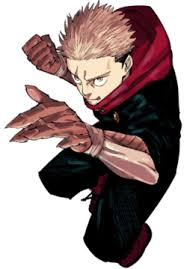
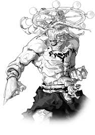
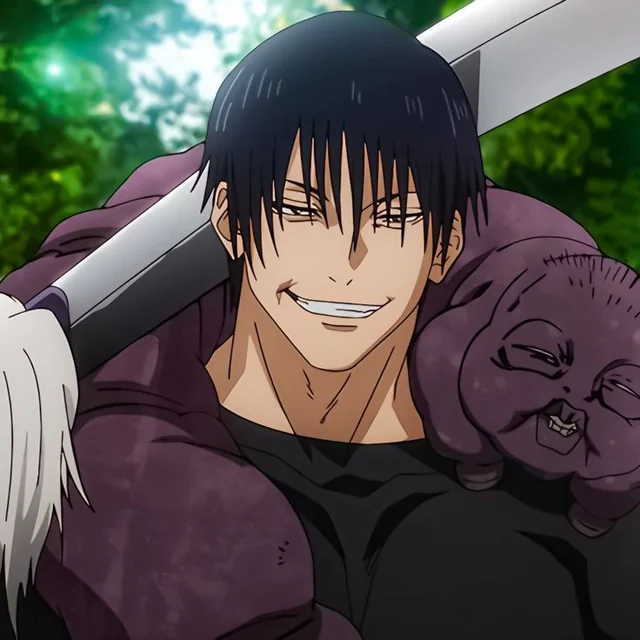
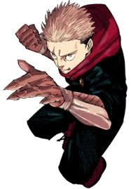
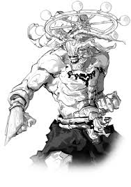
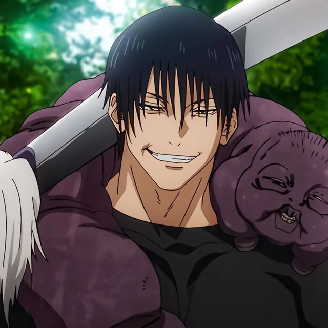

Os personagens de Jujutsu Kaisen
Gojo
Satoru Gojo é o professor dos protagonistas e o feiticeiro mais poderoso da atualidade. Ele possui habilidades extremamente raras, como os Seis Olhos e a Técnica do Infinito, que tornam quase impossível tocá-lo em combate. Gojo é excêntrico e arrogante, mas também se preocupa profundamente com seus alunos e deseja mudar o sistema injusto do mundo jujutsu.
Sukuna
Ryomen Sukuna, conhecido como o "Rei das Maldições", foi um feiticeiro extremamente poderoso da antiguidade que se tornou uma maldição após a morte. Ele agora reside dentro de Yuji, esperando uma chance de retomar o controle total do corpo. Sukuna é cruel, sarcástico e impiedoso, mas muito inteligente e estratégico.
Itadori
Yuji Itadori é o protagonista da história. Ele é um jovem com força física impressionante que, para salvar seus amigos, engole um dedo amaldiçoado pertencente a Sukuna, o mais poderoso espírito amaldiçoado da história. Isso faz com que Yuji se torne o receptáculo de Sukuna. Mesmo assim, ele mantém sua personalidade gentil, determinada e altruísta, lutando sempre para proteger os outros e encontrar um sentido para sua vida e morte.
Mahoraga
Mahoraga é um dos seres mais poderosos e misteriosos do universo de Jujutsu Kaisen. Ele faz parte da técnica das Dez Sombras, usada por Megumi Fushiguro, e é o shikigami mais forte dessa técnica.
.jpg)

 




